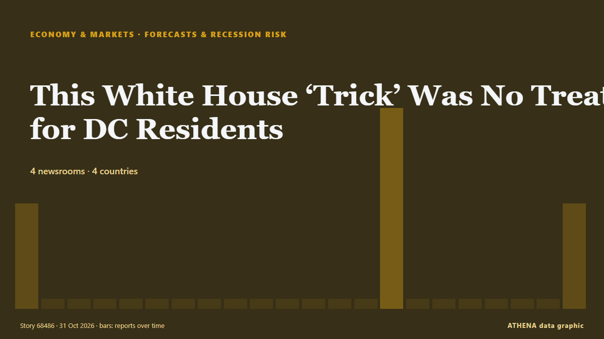

Economics, Finance & Markets
Market monitor - official figures
Which way official market measures are moving - up, down or flat - with the latest official figure and its date, and the market news ATHENA verified alongside. Official figures, not live prices.
Energy
| 1 day | 1 week | 1 month | Official figure | |
|---|---|---|---|---|
| Brent crude | ▼ | ▲ | ▲ | $123.10/bblOfficial data of 27 Oct 2026 |
| WTI crude | ▼ | ▼ | ▲ | $103.37/bblOfficial data of 27 Oct 2026 |
| US natural gas (Henry Hub) | ▲ | ▼ | ▼ | Unusual move $2.76/MMBtuOfficial data of 27 Oct 2026 |
| European natural gas (1 month · 3 months · 12 months)(1M · 3M · 12M) | ▲ | ▲ | ▲ | $25.49/MMBtuOfficial data of 1 Sep 2026 |
| Coal (Australia) (1 month · 3 months · 12 months)(1M · 3M · 12M) | ▲ | ▲ | ▲ | $153.84/tOfficial data of 1 Sep 2026 |
Food
| 1 month | 3 months | 12 months | Official figure | |
|---|---|---|---|---|
| Wheat | ▲ | ▲ | ▲ | $246.85/tOfficial data of 1 Sep 2026 |
US stock markets
| 1 day | 1 week | 1 month | Official figure | |
|---|---|---|---|---|
| S&P 500 | ▼ | ▲ | ▲ | Direction only (index © Cboe)Official data of 29 Oct 2026 |
| Nasdaq Composite | ▼ | ▲ | ▼ | Direction only (index © Cboe)Official data of 29 Oct 2026 |
Rates, risk and the dollar
| 1 day | 1 week | 1 month | Official figure | |
|---|---|---|---|---|
| US 10-year Treasury yield | ▼ | ▲ | ▼ | 4.98 %Official data of 29 Oct 2026 |
| Market volatility (VIX) | ▲ | ▼ | ▲ | Direction only (index © Cboe)Official data of 29 Oct 2026 |
| US dollar, broad index | ▬ | ▬ | ▲ | 121.32Official data of 23 Oct 2026 |
The euro against other currencies
| 1 day | 1 week | 1 month | Official figure | |
|---|---|---|---|---|
| EUR/USD | ▲ | ▼ | ▼ | 1.1172 USDOfficial data of 30 Oct 2026 |
| EUR/GBP | ▼ | ▼ | ▼ | 0.8338 GBPOfficial data of 30 Oct 2026 |
| EUR/CHF | ▼ | ▼ | ▼ | 0.9194 CHFOfficial data of 30 Oct 2026 |
| EUR/JPY | ▼ | ▲ | ▼ | 175.68 JPYOfficial data of 30 Oct 2026 |
| EUR/CNY | ▲ | ▼ | ▼ | 7.4326 CNYOfficial data of 30 Oct 2026 |
| EUR/TRY | ▲ | ▲ | ▲ | 55.801 TRYOfficial data of 30 Oct 2026 |
| EUR/NOK | ▼ | ▼ | ▼ | 10.3120 NOKOfficial data of 30 Oct 2026 |
Sources: US Energy Information Administration (oil, US gas), IMF (European gas, coal, wheat), US Treasury and Federal Reserve (10-year yield, dollar index) Cboe (VIX), S&P Dow Jones Indices (S&P 500) and Nasdaq (Nasdaq Composite), via FRED (Federal Reserve Bank of St. Louis); euro reference rates © European Central Bank. Figures are the latest official values with their date - not live prices. Directions are computed by ATHENA.
Crypto, ETFs and shares in the news
- ‘Binance will absorb impact, not users’: Crypto giant sets aside $6.34 bn to cover losses Risk 3.5 31 Oct
- Long accused of abetting crypto crimes, Binance has now become a victim Risk 1.7 31 Oct
- S&P Global revises Meta’s outlook to ‘negative’ on AI spending Risk 4.2 31 Oct
- Jaishankar meets US Secretary of State Marco Rubio on sidelines of G20: 'Took stock of our bilateral cooperation’ Risk 3.3 31 Oct
- Crypto Biz: Bitcoin’s quantum threat is becoming an economic problem Risk 1.4 31 Oct
- Nasdaq faces $2 trillion wipeout in October as AI spending fears deepen Risk 1.6 31 Oct
- Nvidia weighs credit support for Nscale as data center, IPO face pressure Risk 0.0 31 Oct
- Bitcoin price drops to $78,000 Risk 1.1 31 Oct
- “Bitcoin”in qiyməti 78 min dollara kimi enib Risk 0.0 31 Oct
- Crypto exchanges call for quick moves to bolster defences after Binance heist Risk 1.1 31 Oct

Forecasts & recession riskThis White House ‘Trick’ Was No Treat for DC Residents
Air Force One made a low-level flight over President Donald Trump’s Halloween party—and much of Washington, DC, alarming residents and disrupting air traffic. from The National Interest
| 18 Oct | 10 |
|---|---|
| 19 Oct | 39 |
| 20 Oct | 9 |
| 21 Oct | 34 |
| 22 Oct | 82 |
| 23 Oct | 59 |
| 24 Oct | 29 |
| 25 Oct | 32 |
| 26 Oct | 123 |
| 27 Oct | 132 |
| 28 Oct | 124 |
| 29 Oct | 90 |
| 30 Oct | 104 |
| 31 Oct | 17 |
Scam centres relocated from Cambodia raided in Madagascar
Raids against online scam centres in Madagascar have exposed ties with a criminal group that ran similar operations in Cambodia, also duping African nationals via human trafficking, authorities say. from Bangkok Post
Nasdaq faces $2 trillion wipeout in October as AI spending fears deepen
More than $2 trillion in market value is set to be wiped from the tech-heavy Nasdaq 100 this month, as Big Tech earnings intensified investor scrutiny of whether the billions being poured into… from The Korea Times
USA Clock Change: Daylight Saving Time Ends November 1
Most of the United States will turn clocks back one hour on Sunday, November 1, restoring the usual winter time difference with Greece after a week in which the gap was one hour smaller. from Greek Reporter
Andy Burnham issues 8-word response after Budget as the UK 'needs change'
The Prime Minister has shared his verdict after Chancellor John Healey delivered the Budget on Wednesday. from Liverpool Echo
Canada Pledges €500M Toward EU’s €90B Ukraine Loan
Canadian Prime Minister Mark Carney announced on Friday, Oct. from Kyiv Post
Crypto exchanges call for quick moves to bolster defences after Binance heist
A record US$6.3 billion hack of Binance exposes its vulnerability. from The Business Times
As it happened: Binance’s record $6.3B crypto hack
How Binance’s $6.3 billion hack unfolded, from the first onchain alerts to $3 billion in frozen funds and a widening security investigation. from Cointelegraph
Bank of Japan's Transactions with the Government (Sept.)
Although core consumer inflation occasionally exceeded the target in the early 2020s, Friday marked the first time the Bank of Japan confirmed that its long-term inflation goal had been achieved. from Free Malaysia Today
Minutes of the monetary policy meeting on 16 June 2026
Associated Press Of Pakistan State Bank Governor Jameel Ahmad announces the monetary policy decision at a press conference. from APP (Associated Press of Pakistan)
Evening News Brief October 30: Uttarakhand chopper crash, mega Binance crypto heist and more top stories
Fed holds main interest rate steady despite accelerating inflation
Two policymakers on the Federal Open Market Committee dissented in favor of raising the federal funds rate by 0.25 percentage point. from Supply Chain Dive
Dakar Rally 2027 will be held in Portugal and Morocco, say organisers
The Dakar Rally was moved from Saudi Arabia to Portugal and Morocco over security concerns stemming from Houthi attacks and the war in the Middle East. from Free Malaysia Today
Robert Abela Thanks Christine Lagarde For Her Leadership As ECB President
European Central Bank President Christine Lagarde will step down on Feb. from CNBC Economy
Unilever hiking prices as commodity costs soar amid Iran conflict
The consumer goods firm revealed underlying sales grew by 5.2% in the three months to September 30, of which 2.3% was due to higher prices. from Evening Standard (London)
Sri Lanka’s inflation climbs to 8.3%
Inflation in Sri Lanka increased to 8.3% in October, up from 8.0% recorded in September, according to the Colombo Consumer Price Index (CCPI), the Department of Census and Statistics said. from Daily Mirror
French Economy Shrinks 0.1% as Exports Fall
France's economy shrank 0.1% from July to September as exports fell 1.7%, Insee said, while dockworkers began a 24-hour national strike. from The Rio Times
PAG to buy 51% stake in Evergrande Property Services for $514 million
Asia-focused investment firm PAG will acquire a 51% stake in Evergrande Property Services Group , a unit of debt-laden developer China Evergrande Group, for HK$4.03 billion ($514 million), the two… from Business Recorder
Jio’s blockbuster debut puts valuation, earnings in focus
India’s second-most valuable listed company now needs to show investors the money. from The Business Times
Yen steady before BOJ, AI jitters drive Treasury rally, weigh on dollar
HONG KONG: The yen was steady on Friday ahead of the Bank of Japan’s policy decision, while the dollar tracked Treasury yields lower as a fresh wave of selling in AI shares triggered a flight to… from Business Recorder
Shares in Google owner Alphabet plummet on profit miss, ad slowdown
WASHINGTON: Shares in Google parent Alphabet fell more than 10 per cent in after-hours trading on Wednesday as the company reported lower-than-expected profit and a slowdown in its advertising… from New Straits Times
Philippines may use more tools to stem peso slide, analysts say
By Ditas B. Lopez, Bloomberg The Philippine peso’s nearly 8% slide against the dollar this year may prompt… from BusinessWorld
Sonia Gandhi makes Instagram debut, shares first look of upcoming memoir ‘Belonging: A Journey Of Love’
In her first post, Sonia Gandhi described the memoir as a story of “love, duty, loss and finding a place to belong” from Hindustan Times
Seoul stocks open lower on Wall Street losses, AI concerns
South Korean stocks opened lower Friday, tracking overnight losses on Wall Street, as renewed concerns over the sustainability of the artificial intelligence (AI) boom weighed on investor sentiment. from Korea Herald
Pentagon’s US$1.5 Trillion Budget Explained
The Pentagon wants US$1.5 trillion for fiscal 2027, but US$350 billion hinges on a party-line vote. from The Rio Times
(2nd LD) Sept. industrial output growth hits 15-yr high on chips; retail sales, investment also up
SEOUL, Oct. 30 (Yonhap) -- South Korea's industrial output expanded in September... from Yonhap (English)
US economy posts strong growth, inflation stubbornly high in challenge to Trump
WASHINGTON, United States (AFP) — The United States posted strong economic growth in the third quarter, but the Fed's preferred inflation gauge also accelerated, the Commerce Department said on… from Jamaica Observer
US national debt hits record high of over $40.5 trillion
The debt has increased by $20 trillion in less than a decade. from TASS (English)
US senator calls for accountability over Israel’s killing of 9 Americans in occupied West Bank
‘Nine American citizens dead. No accountability,’ says Chris Van Hollen. from Anadolu Agency (English)
Asian shares fall after Alphabet earnings miss forecasts
MSCI's broadest index of Asia-Pacific shares outside Japan dropped 0.7%, while Japan's Nikkei trimmed gains to be up 0.3%. from Free Malaysia Today
Venezuelan leader demands Bank of England return gold
CARACAS, Venezuela (AFP) — Venezuelan interim president Delcy Rodriguez demanded Wednesday the return of her country's gold reserves held at the Bank of England, where they were frozen more than six… from Jamaica Observer
Revolut takes on high street banks with launch of personal loans in UK
The unsecured loans, ranging between £2,000 and £25,000, offer ‘near-instant’ funds after approval. from Evening Standard (London)
UN probe accuses Israel of 'extermination' in West Bank
GENEVA, Switzerland — Israel has committed the crime against humanity of "extermination" in the West Bank, while continuing to commit "genocide" against Palestinians in the Gaza Strip, United… from The Korea Times